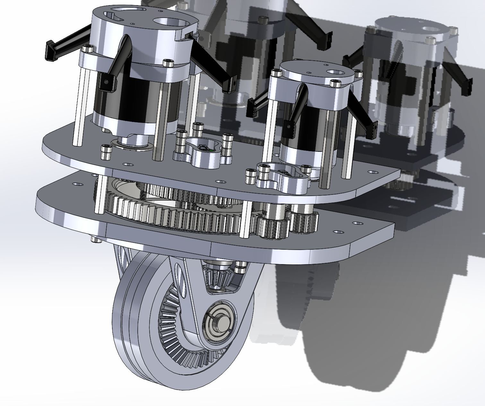
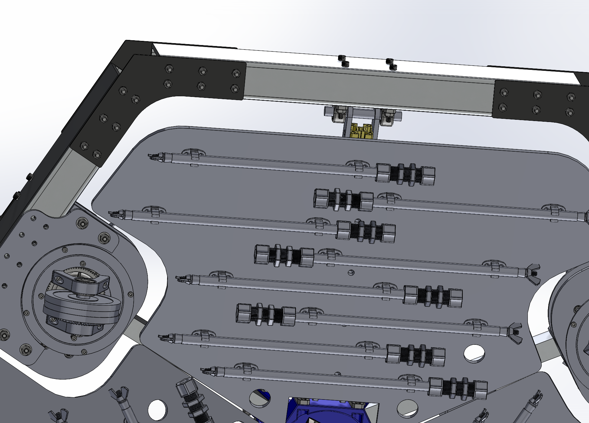

Current ZIMA CAD

Public CAD view of the current ZIMA architecture.
Technology overview
ZIMA is a hull-climbing robotic platform built to make short, repeatable maintenance passes over ship hulls. It combines subsea mobility, close-range UV-C treatment, and a prevention-first operating model designed to keep early-stage fouling from becoming a larger problem.
Public CAD view of the current ZIMA architecture.
Prevention first
The goal is not to wait until the hull is dirty enough to justify a major cleaning event. The goal is to keep the hull from getting there in the first place.
Operating logic
A hull-climbing platform designed to stay attached and move predictably across curved steel surfaces.
A compact treatment module designed to target early-stage growth before it becomes established fouling.
Regular treatment cycles keep the hull closer to a clean baseline instead of letting buildup accumulate.
ZIMA is being developed around commercial operating reality: repeatability, coverage, uptime, and easier integration into maintenance workflows.
Simulation demo
This clip shows how the team is thinking about motion, pathing, and system behavior beyond the physical prototype. It connects the visible hardware program to the software and controls layer underneath it.
It is included here to show that the development work is not just mechanical. Controls and system behavior are part of the build too.
Trimmed from the OppFest video at 2:24 to 2:34 and used here as a simulated ZIMA software demo.
Proprietary development
These CAD views highlight two important parts of the ZIMA platform: the mobility system that controls motion on the hull and the UV-C treatment module that enables prevention-focused operation.

This drive system is being developed to give ZIMA finer maneuvering, better positioning, and tighter motion control while attached to the hull.

This module is designed to maintain close-range, repeatable treatment during each pass so the system can operate as a preventative maintenance tool.
Industry Issues ZIMA Addresses
These are the three public problem areas that make prevention-first hull maintenance matter.
Operators have long relied on coatings and reactive cleaning to manage fouling. A prevention-first system creates a path to reduce how much the hull depends on harsher intervention.
ZIMA is designed to support cleaner hull upkeep before the pressure for aggressive intervention builds.
Even thin fouling layers raise drag. Keeping the hull cleaner more consistently can lower the fuel penalty that builds between major cleaning events.
The system is built around preventing the drag penalty that operators end up paying for later.
Biofouling is a transport pathway. Preventing organisms from establishing on the hull can help reduce transfer risk between ports.
A prevention-first maintenance rhythm can help protect not just vessels, but the waters they move through.
Development story
The program has moved from early proof-of-concept hardware to integrated CAD, larger assemblies, and in-water testing. That progression matters because it shows the rover is being solved as a real subsea system.
An early proof of concept that established the first system architecture.
In-water tests that turned isolated parts into real design decisions.
A more complete rover architecture shaped by build experience and testing.


Build and test media
Fabrication footage showing how the current system is being assembled and refined.
Early in-water testing that keeps the technology grounded in real experimentation.
Next milestone
If you are evaluating pilots, validation support, or technical collaboration, this is the right stage to talk.